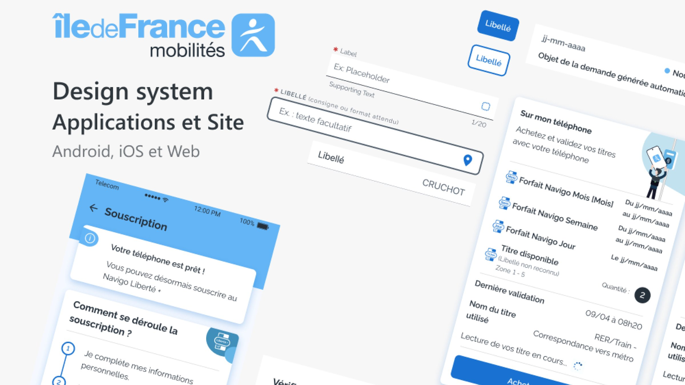

Projets / Cas d'étude 02 · Résumé
Cas d'étude 02 · Résumé
Île-de-France Mobilités
Mon rôle
Piloter 12 chantiers de conception en parallèle et construire un design system multiplateforme partagé par 3 équipes design et 3 équipes de développement.

Volumétrie
Le design system en chiffres.
Design system à gérer
Composants atomes
Composants molécules
Composants pages
Design tokens · couleurs, responsive et mockups
Ce que j'ai appris
Trois enseignements.
Concevoir pour Android et iOS en plus du Web.
Coordonner le travail sur 12 fonctionnalités en parallèle.
Développer un design system multiplateforme.
Presse
Dans la presse
Les fonctionnalités conçues pendant la mission, à leur lancement dans l'application Île-de-France Mobilités.
- Île-de-France MobilitésArticle2 juillet 2026
Le forfait Navigo Annuel est (enfin) arrivé sur téléphone !
Après le Navigo Jour, Semaine et Mois, le Navigo Annuel est enfin arrivé sur smartphone durant cet été 2026. D'abord disponible sur Android en juillet, il est désormais disponible sur iOS.
Lire l'article → - YouTubeVidéo24 juin 2025
Le Navigo Liberté + est disponible sur votre téléphone !
Depuis l'application Île-de-France Mobilités (avec la dernière mise à jour), vous pouvez souscrire en quelques clics à Liberté + et passer directement votre smartphone sur les bornes de validation.
Voir la vidéo → - Île-de-France MobilitésArticle19 juin 2025
Le Navigo Liberté + est disponible sur smartphone
Les avantages du Navigo Liberté + arrivent sur smartphone. Souscription, validation, consultation de votre facture : tout est maintenant accessible depuis l'appli Île-de-France Mobilités.
Lire l'article →